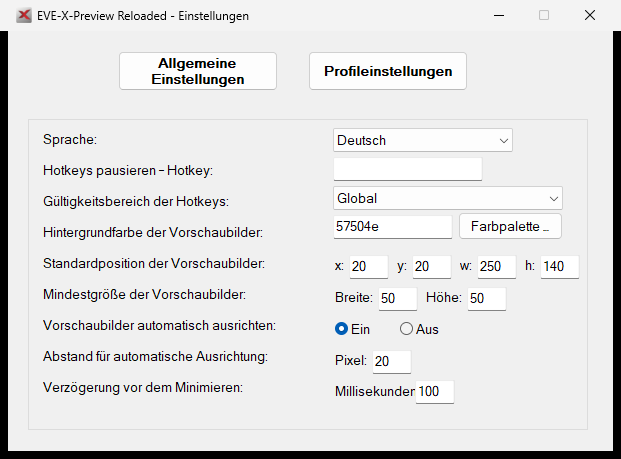
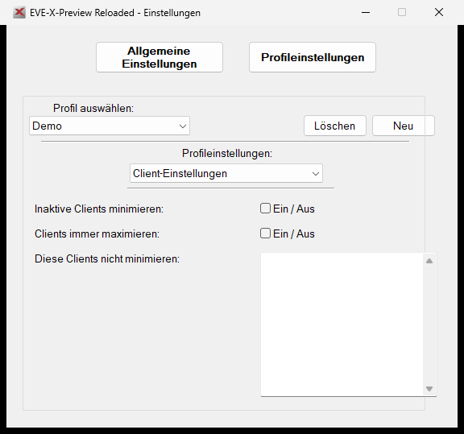

01
Live-Thumbnails
Alle laufenden EVE-Clients als frei positionierbare Vorschauen – inklusive Name, Rahmen und eigener Größe.
Behalte mehrere EVE-Online-Fenster als Live-Thumbnails im Blick und wechsle per Klick oder Hotkey sofort zum richtigen Charakter.

Alles Wichtige für einen schnellen, kontrollierten Wechsel zwischen deinen aktiven EVE-Fenstern.
Alle laufenden EVE-Clients als frei positionierbare Vorschauen – inklusive Name, Rahmen und eigener Größe.
Ein Klick oder frei gewählter Tastatur- und Maus-Hotkey bringt den gewünschten Client nach vorn.
Getrennte Anordnungen, Hotkeys und Farben für Mining, Produktion, Flotte oder jeden anderen Einsatz.
Windows-Farbpalette, HEX- und RGB-Eingabe für Text, aktive Clients und individuelle Charakterrahmen.
Sperre Position und Größe pro Profil, damit ein versehentlicher Rechtsklick dein Layout nicht verschiebt.
Umschaltbare Oberfläche und automatische Hinweise, sobald eine neue GitHub-Version verfügbar ist.
Keine Konzeptgrafik: Die Aufnahmen stammen direkt aus der aktuellen, unter Windows gestarteten Anwendung.
Lege pro Profil fest, welche Clients beim Wechsel minimiert oder maximiert werden. Für die Aufnahme wurde ausschließlich das neutrale Demo-Profil verwendet.
Screenshot in Originalgröße öffnen
Öffne die GitHub-Releases und lade das aktuelle portable ZIP.
Lege den vollständigen Ordner an einem beschreibbaren Ort ab, zum Beispiel unter Dokumente.
Starte EVE-X-Preview-Reloaded.exe. Deine Einstellungen werden direkt im Programmordner gespeichert.
Öffne das Tray-Menü, erstelle ein Profil und ordne Thumbnails sowie Hotkeys nach Wunsch an.
Wichtig: Behalte den Ordner locales neben der EXE. Aktualisierungen ersetzen deine persönliche EVE-X-Preview.json nicht.
Version und Änderungen werden direkt aus GitHub geladen und bleiben dadurch automatisch aktuell.
Die Planung ist transparent. Pakete starten erst nach einer bewussten Entscheidung und werden nur nach erfolgreichen Prüfungen veröffentlicht.
Direkte Layout-Sperre im Tray, klare Rückmeldungen beim Speichern und sicheres Zurückholen nicht sichtbarer Thumbnails.
Positionen komfortabler verwalten, Profile duplizieren, umbenennen und bereinigen.
Zuverlässigere Hotkeys, konfigurierbare Mausaktionen und erweiterte Thumbnail-Modi.
Multi-Monitor/DPI, DWM-Stabilität, sichere Konfigurationen und Diagnoseberichte.
Prüfsummen, bessere Änderungsübersicht und Abschluss der Preview-Phase.
Nutze die vorbereiteten GitHub-Formulare. Je genauer die Angaben sind, desto schneller lässt sich ein Problem nachvollziehen oder eine Idee bewerten.